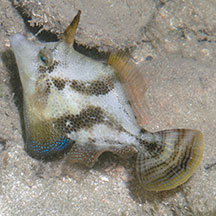
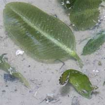
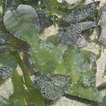
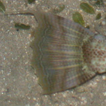
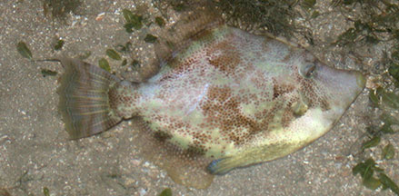
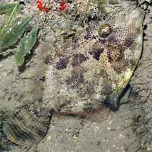
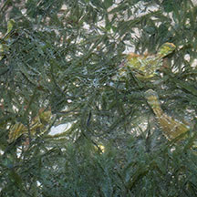
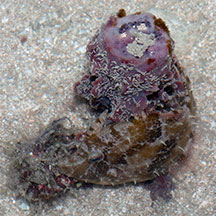

|
|
| fishes text index | photo index |
| Phylum Chordata > Subphylum Vertebrate > fishes > Family Monacanthidae |
| Fan-bellied
filefish Monacanthus chinensis* Family Monacanthidae updated Sep 2020 Where seen? This well camouflaged filefish is commonly seen on many of our shores, in sheltered areas with seagrasses and near reefs. It often remains motionless next to seaweeds or rocks, sometimes flattening out against or 'wrapping around' sponges, rubble and other large objects. Features: To about 38cm, but those seen were 5-8cm long. Large triangular skin flap on the belly that can be greatly expanded, but often tucked close to the body. Body with lots of small circular dots and broad diagonal bars on the sides, in some these bars may be indistinct. It comes in all shades from brown to green. Tail fin large broad with thin brown bands. On a large adult, the upper fin rays on the tail is produced into a filament. More on how to tell apart filefishes. |
 Often with pattern of broad diagonal bars. Chek Jawa, Jul 03 |
 Tiny ones may resemble seagrass blades! Changi, May 11 |
 Looks like seagrass! Changi, Jul 07 |
 Large adults with filament on upper fin ray of the tail. |
 Filament on upper fin ray of the tail. Chek Jawa, Sep 01 |
| What
does it eat? It eats seagrass, seaweed and small crustaceans
as well as immobile animals such as bryozoans, ascidians and hydroids. Human uses: It is sold as seafood in some places. |
|
 Some resemble coral rubble. Chek Jawa, May 05 |
 Three filefishes, head down among seaweeds. Chek Jawa, Jul 05 |
 Wrapped closely around a sponge. Chek Jawa, May 04 |
*Species are difficult to positively identify without close examination.
On this website, they are grouped by external features for convenience of display.
| Fan-bellied filefishes on Singapore shores |
On wildsingapore
flickr
|
| Other sightings on Singapore shores |
Links
References
|